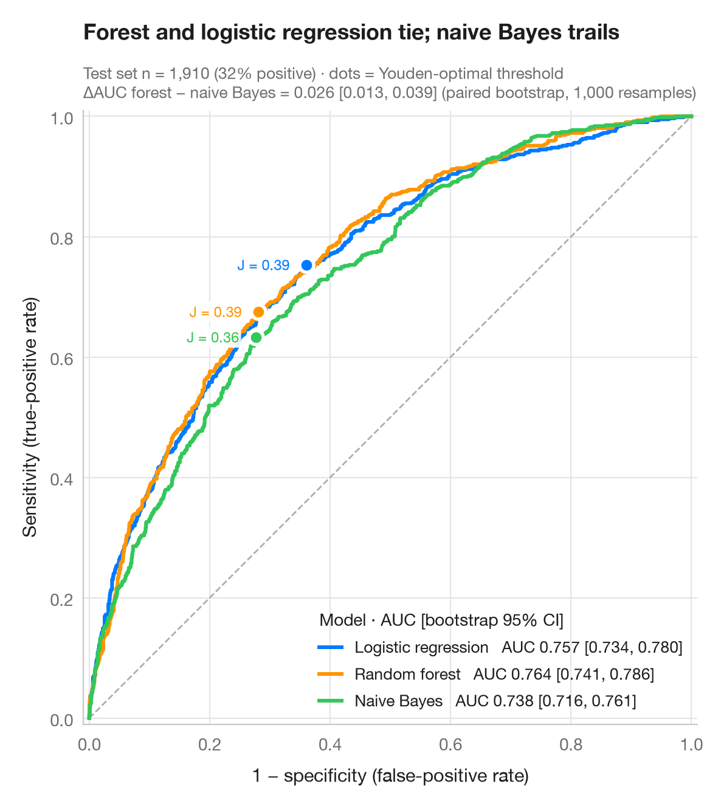

ROC curves
Three classifiers compared by ROC curve, AUC with bootstrap 95% CI and Youden point.

A ROC curve traces sensitivity against 1 − specificity as the decision threshold sweeps from strict to lenient. The diagonal is a coin flip; the closer a curve hugs the top-left corner, the better. The AUC is the probability that a random positive case scores higher than a random negative one; its 95% interval comes from 1,000 bootstrap resamples of the test set, and a paired bootstrap compares the best and weakest model. The dot on each curve is the threshold that maximises Youden's J = sensitivity + specificity − 1.
The setting is Marty & Warin (2025, Journal of Economy and Technology):
algorithmic collusion and what it means for antitrust enforcement. The data are
simulated for illustration — they are not the paper's data or results:
n = 2,000 market-weeks, about 20% of them collusive, described by five features
(price level, cost index, price volatility, share of synchronised price changes,
response lag to cost shocks), split 70/30. Collusion shows in the price–cost gap
and in synchronised and sticky prices, which naive Bayes, treating features as
independent, cannot combine. A
logistic regression, a random forest and a naive Bayes model from
scikit-learn flag collusive episodes; curves and AUCs come from
roc_curve() and roc_auc_score().
import matplotlib.pyplot as plt
import numpy as np
from sklearn.ensemble import RandomForestClassifier
from sklearn.linear_model import LogisticRegression
from sklearn.metrics import roc_auc_score, roc_curve
from sklearn.model_selection import train_test_split
from sklearn.naive_bayes import GaussianNB
# Simulated data, set in the context of Marty & Warin (2025) [marty2025collusion]
# Data: 2,000 market-weeks; collusion is likeliest when price moves are synchronised AND sticky
rng = np.random.default_rng(2025)
n = 2000
cost, sync, lag = rng.normal(size=(3, n)) # cost index, synchrony, lag (z)
y = rng.binomial(1, np.where((sync > 0.3) & (lag > 0.3), 0.55, 0.12))
X = np.column_stack([
1.5 * cost + 0.7 * y + rng.normal(0, 0.6, n), # price level (tracks cost)
1.5 * cost + rng.normal(0, 0.6, n), # cost index
-0.5 * y + rng.normal(0, 1, n), # price volatility
sync, lag]) # synchronised changes, lag to cost shocks
X_tr, X_te, y_tr, y_te = train_test_split(X, y, test_size=0.3, stratify=y, random_state=1)
models = {"Logistic regression": LogisticRegression(max_iter=1000),
"Random forest": RandomForestClassifier(300, min_samples_leaf=20, random_state=1),
"Naive Bayes": GaussianNB()}
palette = ["#007AFF", "#FF9500", "#34C759"]
boot = [rng.integers(0, len(y_te), len(y_te)) for _ in range(1000)]
fig, ax = plt.subplots(figsize=(7, 6.4))
ax.plot([0, 1], [0, 1], color="#AEAEB2", lw=1, ls="--")
scores = {}
for (name, clf), c, dx in zip(models.items(), palette, (-10, -10, 10)):
score = scores[name] = clf.fit(X_tr, y_tr).predict_proba(X_te)[:, 1]
fpr, tpr, thr = roc_curve(y_te, score)
auc = roc_auc_score(y_te, score)
lo, hi = np.percentile([roc_auc_score(y_te[b], score[b]) for b in boot], [2.5, 97.5])
ax.plot(fpr, tpr, color=c, lw=2.2, label=f"{name} AUC {auc:.3f} [{lo:.3f}, {hi:.3f}]")
# Youden's J: threshold that maximises TPR − FPR
j = np.argmax(tpr - fpr)
ax.scatter(fpr[j], tpr[j], s=70, color=c, edgecolor="white", lw=2, zorder=5)
ax.annotate(f"J = {tpr[j] - fpr[j]:.2f}", (fpr[j], tpr[j]), xytext=(dx, 0),
textcoords="offset points", fontsize=8.5, color=c, ha="right" if dx < 0 else "left",
va="top" if dx > 0 else "center",
bbox=dict(boxstyle="round,pad=0.15", fc="white", ec="none", alpha=0.9))
# Paired bootstrap: is the best model really better than the weakest?
a, b = scores["Logistic regression"], scores["Naive Bayes"]
diff = [roc_auc_score(y_te[i], a[i]) - roc_auc_score(y_te[i], b[i]) for i in boot]
d_lo, d_hi = np.percentile(diff, [2.5, 97.5])
ax.set_xlim(-0.01, 1.01); ax.set_ylim(-0.01, 1.01); ax.set_aspect("equal")
ax.grid(axis="x")
ax.set_xlabel("1 − specificity (false-positive rate)")
ax.set_ylabel("Sensitivity (true-positive rate)")
ax.legend(loc="lower right", title="Model · AUC [bootstrap 95% CI]", alignment="left",
handlelength=1.4, fontsize=9.5)
ax.set_title("Logistic regression and forest tie; naive Bayes trails", pad=42)
ax.text(0, 1.02, f"Test set n = {len(y_te):,} market-weeks (simulated, {y_te.mean():.0%} collusive) · dots = Youden\n"
f"ΔAUC logistic − naive Bayes = {roc_auc_score(y_te, a) - roc_auc_score(y_te, b):.3f} "
f"[{d_lo:.3f}, {d_hi:.3f}] (paired bootstrap, 1,000 resamples)",
transform=ax.transAxes, fontsize=9.5, color="#6E6E73")
plt.show()
Figures use the optional PyStatlas style: add plt.style.use("pystatlas.mplstyle") to match the look exactly.
Data source
- Simulated data. Simulated data with a fixed random seed, created for this example.
No real respondents, documents or measurements: the numbers only illustrate how the chart and its statistics work. - Marty & Warin (2025), algorithmic collusion and antitrust. Marty, F., & Warin, T. (2025). Deciphering algorithmic collusion: Insights from bandit algorithms and implications for antitrust enforcement. Journal of Economy and Technology, 3, 34–43. https://doi.org/10.1016/j.ject.2024.10.001
The example is set in the context of this paper; unless its description says otherwise, the numbers are simulated and are not the paper's data or results.
The examples illustrate statistical methods. Their numbers are simulated unless an entry says otherwise, and their titles describe what each figure shows in these simulated data — not findings of the cited papers, nor the author's position on the substantive question. For results, context and data, rely on the papers cited here.
How to cite
PyStatlas is created and maintained by Thierry Warin. If it helped your work, please cite it.
Warin, T. (2026). ROC curves. In PyStatlas: A Python Gallery of Statistical Graphics for the Social Sciences (Version 1.1.0) [Computer software]. https://warint.github.io/pystatlas/model-diagnostics/roc-curve/
@misc{warin2026statlas,
author = {Warin, Thierry},
title = {PyStatlas: A Python Gallery of Statistical Graphics for the Social Sciences},
year = {2026},
version = {1.1.0},
howpublished = {\url{https://warint.github.io/pystatlas/}},
note = {Source code: https://github.com/warint/pystatlas}
}More in Model diagnostics

Residual diagnostics
The classic 2 × 2 panel for a linear model — linearity, normality, variance, leverage.
plot(lm) / performance::check_model()
Influence plot
Studentized residuals vs leverage, with bubbles sized by Cook's distance.
car::influencePlot()
Calibration plot
Predicted vs observed risk per decile, with Wilson CIs, prediction histograms and Brier score.
rms::calibrate() / probably::cal_plot_breaks()